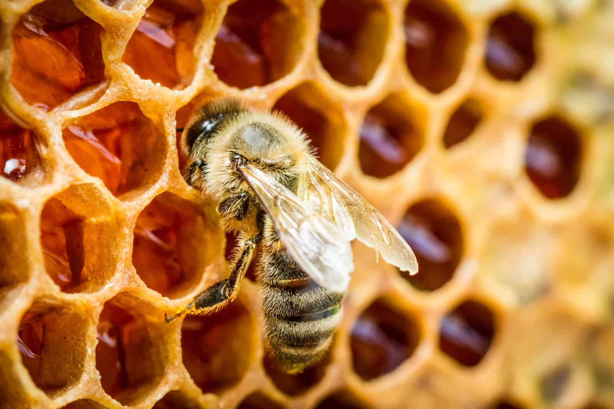

Bees?
Bees are winged insects closely related to wasps and ants, known for their role in pollination and, in the case of the western honey bee, for producing honey.
How do they work?
When a bee lands on a flower, the hairs all over the bees' body attract pollen grains through electrostatic forces. Stiff hairs on their legs enable them to groom the pollen into specialized brushes or pockets on their legs or body, and then carry it back to their nest.
Bees take the nectar inside the colony and pack it away in hexagon-shaped beeswax honey cells. They then turn the nectar into honey by drying it out using a warm breeze made with their wings. Once the honey has dried out, they put a lid over the honey cell using fresh beeswax